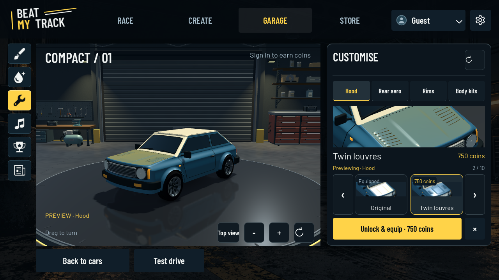
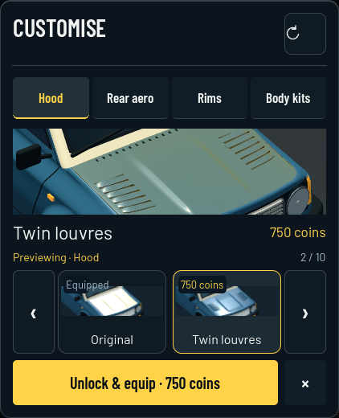

Customisation carousel
Actual Godot App captures. Parts and paint designs preview on the car before purchase. The selected part receives a gold highlight; only the separate equip action can save or unlock it. Short landscape screens keep the live car visible and use a compact workbench.

After — Compatibility, 1280 × 720, parts
The before captures come from the preceding native Garage review, whose GaragePage and livery-menu source hashes exactly match this task's saved starting copies. The final views use isolated guest records. No player account or live backend was modified.
Carousel motion
The sequence below consists of 24 native workbench crops: a bounce at the first option, then a move to the next card.

Implementation and checks · Commands, results and hashes